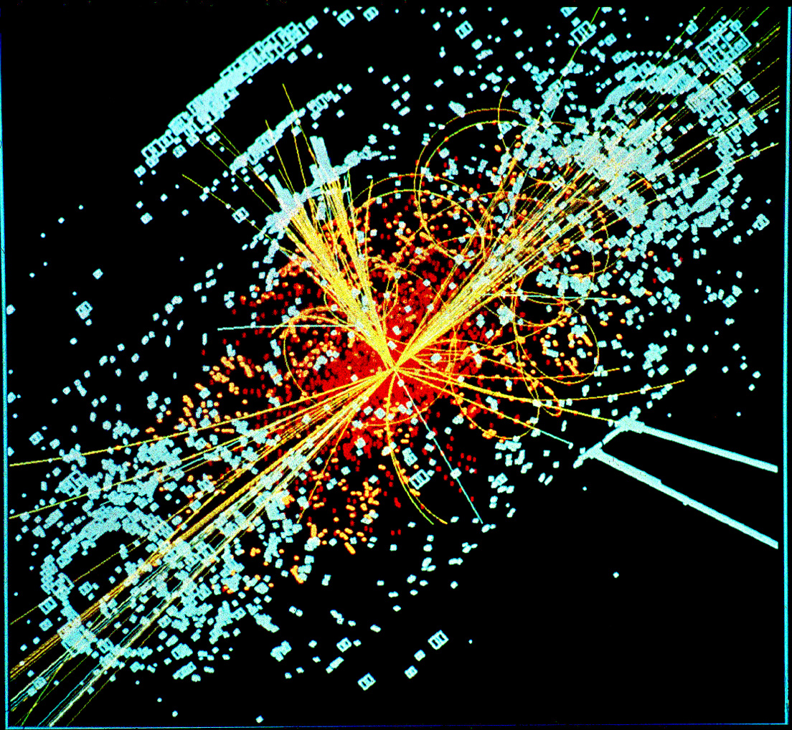

Бозон Хиггса- элементарная частица (бозон), квант поля Хиггса, с необходимостью возникающий в Стандартной модели физики элементарных частиц вследствие хиггсовского механизма спонтанного нарушения электрослабой симметрии. Его открытие завершает Стандартную модель.Масса бозона Хиггса решит, сможем ли мы найти частицы темной материи, или существуют другие Вселенные, а в нашей мы не откроем больше ничего нового.Это Бозон Хиггса. Все слышали о нем, да. Но мало, кто понимает, зачем он нужен. Бозон Хикса - это финальный элемент пазла под названием "стандартная модель". Что такое стандартная модель? Эту частицу СМИ прозвали частицей Бога. Получить ее в чистом виде невероятно сложно. Она существует в нашем мире всего одну септиллионную долю секунды. Чтобы поймать ее, построили Большой адронный коллайдер
Бозон Хиггса – последний фрагмент пазла под названием «Стандартная модель». Его масса ответит на вопрос: Есть ли ещё что-то за пределами этой таблицы, что нам только предстоит открыть? И главное: в какой Вселенной мы живём? Если он окажется лёгким 115 ГэВ. Это значит, что верна теория суперсимметрии или Сьюзи, как её называют ученые. Но вот если Бозон Хиггса окажется тяжелее 140 ГэВ, то значит верна другая теория: о том что наш мир не единственный, и мы живём в Мультивселенной.
Но какая из двух теорий оказалась верна?
В каком мире мы живём?
Всё решилось 4 июля 2012 года.
Вопрос, в какой Вселенной мы живём, зависел от одного:
Сколько весит Бозон Хиггса и есть ли он вообще?
Ученые долго показывали друг другу графики, схемы и кислотные рисунки,
от которых у меня рябит в глазах.
Но главные были вот эти графики. По одной оси число событий, по другой – их энергия. Кривые ровные, кроме одного места: 125 ГэВ.
Значит, там есть частицы.
Тот самый Бозон Хиггса, за которым охотились ученые.
Шанс что они ошиблись: 1 к 3,5 млн.
Пока все пожимали друг другу руки,тихо заплакал один мужчина.
Этот пожилой мужчина – Питер Хиггс.
Он плачет, потому что и не надеялся дожить до этого момента.
Теория, которую он создал 50 лет назад, оказалась верна.
Произошло важнейшее событие в физике 21 века, которое оставило учёных в недоумении.
125 ГэВ.
Мы ждали орла или решку, но монета падает на ребро.
То есть, результат оказался посередине.
Вес Бозона Хиггса 125 ГэВ.
Мы всё те же хомосапиенс, что и 100 000 лет назад:
те же размеры мозга, те же физические возможности.
Нас отличает лишь время, в которое мы живём, и культура, всё.
И если раньше наука двигалась маленькими шажками,
то сейчас она несётся со скоростью фуры.
Но, возможно, совсем скоро мы упрёмся в стенку и не будем открывать новых частиц.
Возможно, мы дошли до "Великой пустыни Физики",
когда мы не сможем ничего больше открыть и всё, это предел.
Больше частиц новых нет.
Даже если мы построим огромный ускоритель вокруг чёрной дыры в центре нашей Галактики,
мы ничего нового не откроем.
По одной оси число событий, по другой – их энергия. Кривые ровные, кроме одного места: 125 ГэВ.
Значит, там есть частицы.
Тот самый Бозон Хиггса, за которым охотились ученые.
Шанс что они ошиблись: 1 к 3,5 млн.
Пока все пожимали друг другу руки,тихо заплакал один мужчина.
Этот пожилой мужчина – Питер Хиггс.
Он плачет, потому что и не надеялся дожить до этого момента.
Теория, которую он создал 50 лет назад, оказалась верна.
Произошло важнейшее событие в физике 21 века, которое оставило учёных в недоумении.
125 ГэВ.
Мы ждали орла или решку, но монета падает на ребро.
То есть, результат оказался посередине.
Вес Бозона Хиггса 125 ГэВ.
Мы всё те же хомосапиенс, что и 100 000 лет назад:
те же размеры мозга, те же физические возможности.
Нас отличает лишь время, в которое мы живём, и культура, всё.
И если раньше наука двигалась маленькими шажками,
то сейчас она несётся со скоростью фуры.
Но, возможно, совсем скоро мы упрёмся в стенку и не будем открывать новых частиц.
Возможно, мы дошли до "Великой пустыни Физики",
когда мы не сможем ничего больше открыть и всё, это предел.
Больше частиц новых нет.
Даже если мы построим огромный ускоритель вокруг чёрной дыры в центре нашей Галактики,
мы ничего нового не откроем.